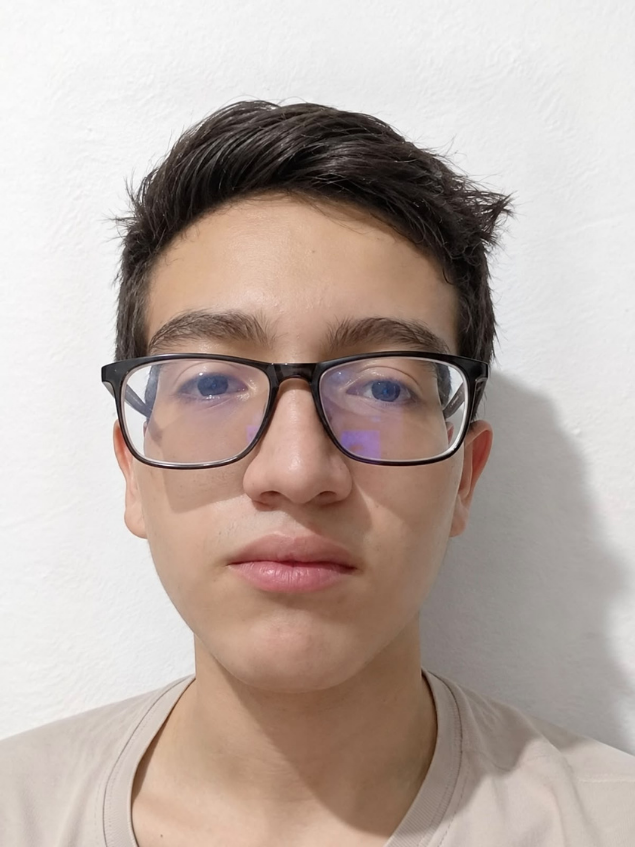

DESARROLLADOR DE SOFTWARE
Carlos Daniel
Carlos Daniel
Arenas López
Desarrollador de Software Full Stack
Tecnólogo en Desarrollo de Software y estudiante de Ingeniería de Sistemas, enfocado en crear soluciones web eficientes, escalables y funcionales.
📍 Pereira, Risaralda, Colombia
✉ d.arenaslop3z@gmail.com

CONÓCEME
Resumen profesional
Desarrollador Full Stack y Tecnólogo en Desarrollo de Software, actualmente cursando quinto semestre de Ingeniería de Sistemas en la Universidad Tecnológica de Pereira. Cuento con experiencia en desarrollo web, evolución de plataformas, soporte técnico y arquitectura de software.
Tengo conocimientos en tecnologías frontend y backend como PHP (Laravel), JavaScript (React), Python y administración de bases de datos relacionales y no relacionales, entre ellas MySQL, PostgreSQL y MongoDB.
Me caracterizo por la resolución eficiente de problemas, la disciplina operativa, la adaptabilidad y el aprendizaje continuo. Busco aportar soluciones tecnológicas que respondan a necesidades reales y generen valor.
Full Stack
Perfil de desarrollo
B2
Inglés certificado
UTP
Formación universitaria
MI PERFIL
Habilidades
Conocimientos técnicos y competencias profesionales.
Frameworks y librerías
Bases de datos
Herramientas y tecnologías
Habilidades blandas
Otros conocimientos
TRAYECTORIA
Experiencia laboral
Octubre 2025 — Octubre 2026
EXPERIENCIA PROFESIONAL
Desarrollador Full Stack
Logosmart S.A.S.
- Desarrollo Backend y Frontend: diseño e implementación de nuevas funcionalidades en plataformas existentes y creación de sitios web desde cero, optimizando la experiencia de usuario y el rendimiento del servidor.
- Integración y consumo de APIs: desarrollo e integración de servicios RESTful para conectar módulos internos con servicios de terceros.
- Mantenimiento y soporte: diagnóstico y resolución de incidencias en aplicaciones web de producción, contribuyendo a la continuidad operativa del software.
- Trabajo colaborativo: participación en el ciclo de vida del desarrollo mediante herramientas de control de versiones como Git y Bitbucket.
Diciembre 2024 — Julio 2025
EXPERIENCIA ANTERIOR
Experiencia en Coats Cadena Andina
Coats Cadena Andina
Experiencia previa con tecnologías como C# y JavaScript.
MI EDUCACIÓN
Formación académica
Bachiller Académico
Liceo Reynel
Tecnología en Desarrollo de Software
Universidad Tecnológica de Pereira
Ingeniería de Sistemas
Universidad Tecnológica de Pereira
Quinto semestre
TRABAJO REALIZADO
Proyectos destacados
Algunos proyectos personales y académicos.

DESARROLLO WEB
Tienda de ropa LosPerchas
Tienda virtual de ropa con backend desarrollado en Python y Flask, base de datos MongoDB e interfaz construida con HTML y CSS.
Ver proyecto ↗
APLICACIÓN WEB
FakeApi
Aplicación que consume una Fake API para realizar operaciones CRUD sobre productos de una tienda de ropa.
Ver proyecto ↗
DESARROLLO DE VIDEOJUEGOS
Fight Game
Juego de combate desarrollado en Python utilizando Pygame para gestionar eventos, lógica de juego e interacción.
Ver proyecto ↗
FRONTEND
Memory Game
Juego de memoria desarrollado con React, JavaScript, HTML y CSS. Utiliza almacenamiento local para conservar las puntuaciones.
Ver proyecto ↗
SISTEMA WEB
Cine LosPerchas
Sistema web de cine desarrollado con HTML, JavaScript y MongoDB, enfocado en la gestión de funcionalidades de una plataforma de cine.
Ver proyecto ↗
COMUNICACIÓN
Idiomas
Español
Nativo
Inglés
Intermedio - Avanzado
RECOMENDACIONES
Referencias
Daniel Cuartas
PM · Logosmart S.A.S.
daniel.cuartas@logossmart.comBrahyan Uribe
Desarrollador de Software
316 876 6361Annie Osorio
Contadora
312 219 8719¿Tienes un proyecto en mente?
Estoy abierto a nuevas oportunidades, proyectos y colaboraciones en desarrollo de software.
Enviar un correo